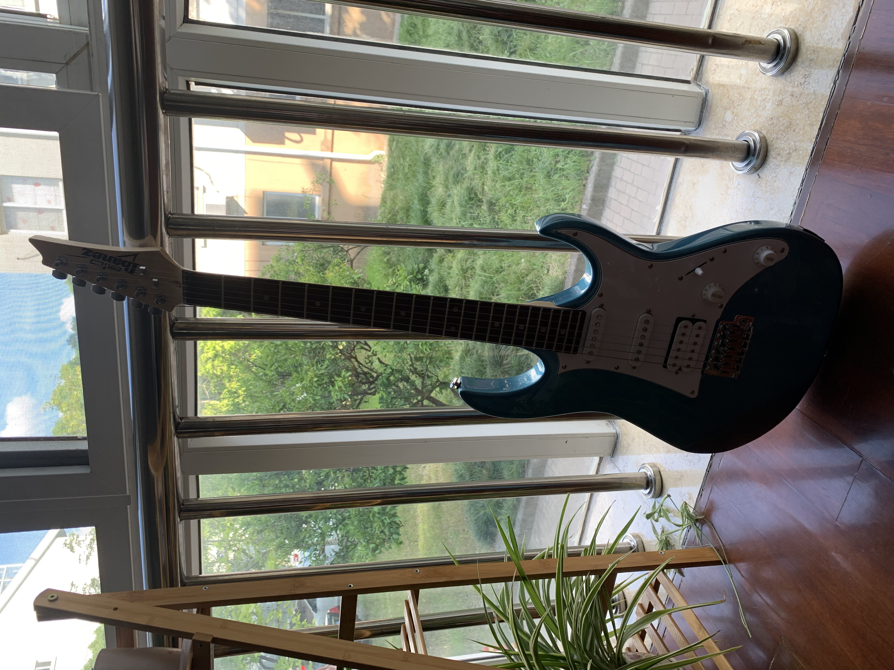
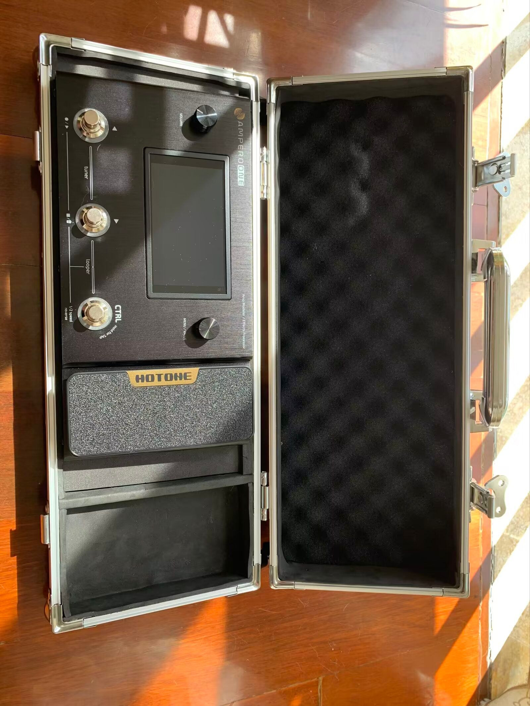

My name is ZhiCheng Tian, welcome to my personal website. Here, you can learn about me from various aspects. Thank you for visiting.
About my educational background...
Taihu College of Wuxi, Scotland College
Major: Computer Science and Technology
Degree: Bachelor's (Expected)
Enrollment Period: September 2022 - Expected Graduation in 2025
Honors: IELTS Score Award
Currently, while maintaining a grasp of my professional course knowledge, I also spend some of my time on my personal interests. I have some accomplishments in music, particularly in playing the guitar and drums, and I plan to self-study some music theory next, to gain the ability to compose and arrange my own music.
In addition, I often spend time on outdoor activities, such as cycling. After entering university, I bought a road bike and frequently explore this unfamiliar city after a day's classes. Next, I might buy a motorcycle to experience even more of the natural scenery.
 I plan to set up an independent game studio with friends after graduation. This way of living aligns with my interests and professional skills, and it won't be too stressful, so I consider it my future goal. At the same time, I will integrate my pursuit of music into it.
My professional strengths lie in meticulous project planning and comprehensive team management. I can clearly outline a complete project plan, providing direction for the team's work. At the same time, I consider the characteristics of each team member and allocate tasks reasonably. Also, I am highly receptive to new knowledge and have a good ability for self-learning. In terms of English, my current IELTS score is 5.5, and I plan to reach 6 this year.
This is my contact information:
QQ:2502108021
Email:2502108021@qq.com